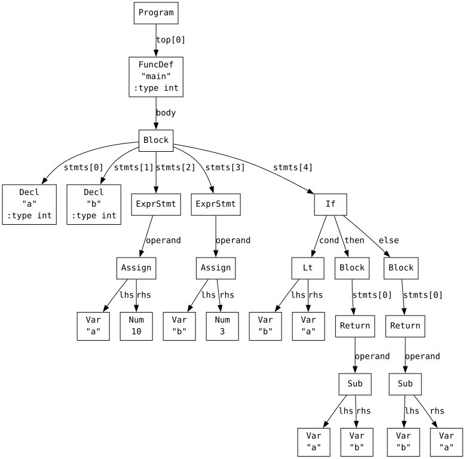
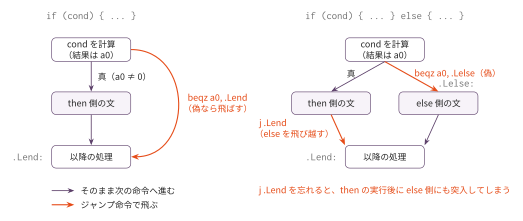
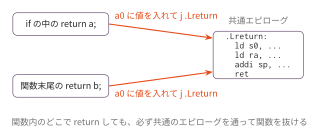

コマ4: if/else + 比較演算
今日のゴール
条件分岐と比較演算、そして三項演算子を実装する。
コマ3までは、関数内の文は常に先頭から順に実行された。
この回では、条件によって実行する文を変える if / else を扱う。
int main() {
int a;
int b;
a = 10;
b = 3;
if (a > b) {
return a - b;
} else {
return b - a;
}
}目標は、条件式の結果に応じて、then側かelse側のどちらかの文だけを実行できるようにすることである。
この回で扱う範囲
対象にするプログラムは、main 関数内に以下の要素を含むものに限定する。
| 種類 | 例 |
|---|---|
| 比較演算 | a > b, x == 42, y <= 10 |
| if 文 | if (cond) { ... } |
| if/else 文 | if (cond) { ... } else { ... } |
| else if | if (cond1) { ... } else if (cond2) { ... } |
| 入れ子の if | if (cond1) { if (cond2) { ... } } |
| ブロック | { ... } |
| return 文 | return 式; |
| 三項演算子 | a > b ? a : b |
| 変数宣言・代入・算術式 | コマ3までに扱ったもの |
while、for、関数呼び出し、ポインタはまだ扱わない。
この回までの言語仕様（EBNF）
この回までに書けるプログラムの文法を、累積の形でまとめる。
記法と最終形の全体像は
language_spec.md の「形式文法（EBNF）」を参照。
scalar_type ::= 'int' /* ポインタはコマ7、char はコマ8 */
obj_type ::= scalar_type
program ::= func_def /* ユーザー定義関数はコマ6 */
var_decl ::= obj_type IDENT ';'
func_def ::= 'int' 'main' '(' ')' func_body /* 一般の関数定義はコマ6 */
func_body ::= '{' { var_decl } { stmt } '}'
stmt ::= expr_stmt
| block
| if_stmt
| 'return' expr ';'
expr_stmt ::= expr ';' /* 空文 ; はコマ5 */
block ::= '{' { stmt } '}'
if_stmt ::= 'if' '(' expr ')' stmt [ 'else' stmt ]
expr ::= assign_expr
assign_expr ::= unary_expr '=' assign_expr /* 右結合 */
| cond_expr
cond_expr ::= binary_expr [ '?' expr ':' cond_expr ] /* 右結合 */
binary_expr ::= unary_expr { bin_op unary_expr }
bin_op ::= '*' | '/' | '%' /* 論理 && || はコマ13 */
| '+' | '-'
| '<' | '>' | '<=' | '>='
| '==' | '!='
unary_expr ::= primary_expr
| '-' unary_expr
primary_expr ::= INT_LITERAL
| IDENT
| '(' expr ')'この回までの二項演算子の優先順位（高い順）:
| 優先順位 | 演算子 | 結合 |
|---|---|---|
| 1（高） | * / % |
左 |
| 2 | + - |
左 |
| 3 | < > <= >= |
左 |
| 4 | == != |
左 |
表の読み方はコマ1の「木の形は規則で決まっている」と
language_spec.md の「演算子」を参照。
else は最も内側の未対応 if へ結合する。
字句トークンの定義はどの回でも同じであるため、ここでは繰り返さない。
language_spec.md の「字句トークン」を参照。
AST を確認する
まず、if/else を含むプログラムがどのような AST になるか確認する。
python3 scaffold/parse_viewer.py sessions/04_if_else/tests/target.cこのプログラムの内容は次の通り。
int main() {
int a;
int b;
a = 10;
b = 3;
if (a > b) {
return a - b;
} else {
return b - a;
}
}実行すると、次のようなS式が表示される。
(program
(funcdef "main" :type int (params)
(block (decl "a" :type int) (decl "b" :type int)
(exprstmt
(assign (var "a") (num 10)))
(exprstmt
(assign (var "b") (num 3)))
(if
(cond
(lt (var "b") (var "a")))
(then
(block
(return
(sub (var "a") (var "b")))))
(else
(block
(return
(sub (var "b") (var "a")))))))))
注目すべき点は2つある。
1つ目。元のCコードの条件式は a > b だが、ASTでは (lt (var "b") (var "a")) として表されている。
Parser は > を < に、>= を <= に、それぞれ左右を入れ替えて変換する。
そのため、AST上では ND_GT や ND_GE は決して現れない。
2つ目。if ノードは次の3つのフィールドを持つ。
| フィールド | 役割 |
|---|---|
cond |
条件式ノード |
then |
条件が真のときに実行する文ノード |
else_ |
条件が偽のときに実行する文ノード。else がない場合は None |
比較演算
この回では、比較演算も式として扱う。
比較演算の結果は、真なら 1、偽なら 0 とする。
Parser が返す比較演算ノードは次の通り。
| Cの式 | AST | 意味 |
|---|---|---|
a == b |
ND_EQ |
等しいなら 1 |
a != b |
ND_NE |
等しくなければ 1 |
a < b |
ND_LT |
左辺が右辺より小さければ 1 |
a <= b |
ND_LE |
左辺が右辺以下なら 1 |
a > b |
ND_LT に正規化 |
b < a として表される |
a >= b |
ND_LE に正規化 |
b <= a として表される |
ND_GT や ND_GE は登場しないため、これらに対応するコードは不要である。
比較演算のコード生成
二項演算の共通パターンにより、比較命令を出す直前には次の状態になっている。
| レジスタ | 内容 |
|---|---|
a1 |
左辺の値 |
a0 |
右辺の値 |
比較演算は次のように生成する。
| ノード | 生成する命令 | 説明 |
|---|---|---|
ND_EQ |
sub a0, a1, a0 / seqz a0, a0 |
差が0なら a0 = 1、それ以外は 0 |
ND_NE |
sub a0, a1, a0 / snez a0, a0 |
差が0でなければ a0 = 1、差が0なら 0 |
ND_LT |
slt a0, a1, a0 |
lhs < rhs なら a0 = 1、それ以外は 0 |
ND_LE |
slt a0, a0, a1 / xori a0, a0, 1 |
!(rhs < lhs) として計算する |
seqz (set if equal to zero)、snez (set if not equal to zero)、slt (set if less than)、xori (xor immediate) はRV64の命令である。
たとえば、a < b のASTは (lt (var "a") (var "b")) であり、次のように生成される。
# a1 = a, a0 = b の状態
slt a0, a1, a0a1 < a0 が成り立てば a0 = 1、成り立たなければ a0 = 0 となる。
条件分岐の考え方
Cでは、if の条件式の値が 0 なら偽、0 以外なら真として扱う。
if (cond) {
文
}このコードは、次のような流れに変換できる。
cond を計算する
もし cond の結果が 0 なら Lend に飛ぶ
文を実行する
Lend:RV64では、beqz a0, label を使う。
beqz a0, .L1これは、a0 が 0 なら .L1 にジャンプする、という意味である。
cond の計算結果は a0 に入っているため、beqz a0, Lend で「偽なら飛ばす」という動作になる。
ラベル生成
分岐の飛び先には、一意なアセンブリラベルが必要になる。
new_label() は、呼ばれるたびに異なる名前のラベルを返すメソッドである。
def new_label(self) -> str:
self._label_counter += 1
return f".L{self._label_counter}"インスタンス変数 self._label_counter は __init__ で 0 初期化される。
ラベルの一意性は、この self._label_counter がプログラム全体で単調に増え続けることで保証される。
.L で始まる名前は慣用的にローカルラベルと呼ばれ、シンボル表に残らない（アセンブラや
リンカが外部から参照する対象にしない）扱いを受けるが、名前の一意性そのものはアセンブラが
自動で保証してくれるわけではない。
if の生成パターン
if (cond) {
文
}これは、次のような命令の並びとして生成する。
# cond を codegen
beqz a0, Lend
# 文
Lend:条件が偽なら beqz で Lend に飛び、文は実行されない。
if/else の生成パターン
if (cond) {
then文
} else {
else文
}この場合は、then 側の実行後に else 側を飛ばす必要がある。
# cond を codegen
beqz a0, Lelse
# then
j Lend
Lelse:
# else
Lend:こうしないと、then 側の実行後に else 側にも突入してしまう。

偽のときは beqz でラベルへ飛ぶ。
if/else では、then 側の最後に j Lend を置いて else 側を飛び越す。
else if の扱い
else if という専用ノードはない。
Parser は、else の中にさらに if が入っているものとして扱う。
たとえば、次のコードを考える。
if (score >= 90) {
return 4;
} else if (score >= 70) {
return 3;
} else {
return 1;
}ASTでは、else の中にもう一つの if が入る。
(if
(cond ...)
(then ...)
(else
(if
(cond ...)
(then ...)
(else ...))))else_ が指すノードの kind が ND_IF であるかどうかにかかわらず、gen_stmt(stmt.else_) を再帰的に呼べば、else if も自然に処理できる。
else_ が None になるまで、再帰が続く。
return と共通エピローグ
コマ3までは、return 文が関数の末尾にしか現れなかったため、return の後に直接エピローグを置けばよかった。
しかし、コマ4からは if の中などに return が現れる。
if (a > b) {
return a;
}
return b;この場合、if の中の return で関数をその場で終了しなければならない。
そのため、return 文では、戻り値を a0 に入れた後、関数末尾のエピローグラベルヘジャンプする。
return式を codegen する
j Lreturngen_func() では、関数ごとに _ret_label を作り、エピローグの直前に置く。
.Lreturn:
ld s0, ...
ld ra, ...
addi sp, sp, ...
ret共通エピローグラベルを使うことで、関数内のどこに return があっても正しく関数を抜けられるようになる。

三項演算子: 値を持つ分岐（式と文の違い）
if/else と同じ回で、三項演算子 ?: も実装する。
int main() {
int a;
int b;
a = 3;
b = 8;
return a > b ? a : b;
}ここで「式と文の違い」がはっきり見える。
| if / else | ?: |
|
|---|---|---|
| 種類 | 文 | 式 |
| 役割 | 実行する文を選ぶ | 選ばれた枝の値が式の値になる |
| 書ける場所 | 文の位置 | 式の中（return の右、代入の右辺、関数の引数など） |
コード生成はどちらも同じ分岐で書ける。違いは、?: では選ばれた枝の
評価結果が a0 に残ることだけである。
def codegen_Cond(self, node):
label_else = self.new_label()
label_end = self.new_label()
self.codegen(node.cond)
self.emit(f' beqz a0, {label_else}')
self.codegen(node.then) # 値が a0 に残る
self.emit(f' j {label_end}')
self.emit(f'{label_else}:')
self.codegen(node.else_) # 値が a0 に残る
self.emit(f'{label_end}:')gen_stmt_If とほぼ同じ形だが、gen_stmt ではなく codegen
（式のコード生成）の一員である点に注意する。AST 上は
(ternary cond then else) というノードになる。
gen_stmt に追加する処理
コマ3 で実装した gen_stmt() に、さらに文の種類を追加する。
node.kind |
呼ばれる handler | 処理 |
|---|---|---|
'Block' |
gen_stmt_Block |
stmts を先頭から順に self.gen_stmt() する |
'If' |
gen_stmt_If |
条件式を self.codegen() し、ラベルを生成して分岐。else_ があれば self.gen_stmt() で処理する |
'Break' |
gen_stmt_Break |
コマ5 で対応。コマ4 では未対応でよい |
'Continue' |
gen_stmt_Continue |
同上 |
編集するファイル
mycc.py
importlib でコマ3 の Codegen03 を継承した Codegen04 に、以下の機能を追加する。
| 実装対象 | 役割 |
|---|---|
new_label() |
一意なアセンブリラベルを返す |
gen_stmt_If(node) |
条件分岐 (beqz / j) を生成。else_ も処理する |
gen_stmt_Block(node) |
stmts を順に gen_stmt する |
codegen_Eq(node) / codegen_Ne(node) / codegen_Lt(node) / codegen_Le(node) |
比較演算。handler を追加する |
codegen_Cond(node) |
三項演算子。分岐して選ばれた枝の値を a0 に残す |
| （dispatcher 対応） | codegen に 'Eq' 'Ne' 'Lt' 'Le' 'Cond' の case を追加する |
実装手順
- スケルトンの
Codegen04がCodegen03をimportlibで継承していることを確認する。ラベル採番のnew_label()と、左右を評価してa1/a0に載せる_binary(lhs, rhs)、codegen()/gen_stmt()のディスパッチはあらかじめ書かれている _reset_func_state(node)を実装する（super()._reset_func_state(node)で frame_size を受け、self._ret_label = self.new_label()でこの関数専用の return ラベルを作る。どのテストでも必要）_emit_func_epilogue(frame_size)を実装する（エピローグ本体の前にself._ret_labelのラベル行を出す。その後のs0/ra復元は親クラスの hook を呼んでよい）gen_stmt_Return(node)を上書きする（式をcodegenした後、その場でretせずj <self._ret_label>へ飛ばす）gen_stmt_Block(node)を実装する（node.stmtsを先頭から順にself.gen_stmt()する）codegen_Eq/codegen_Ne/codegen_Lt/codegen_Leを実装する（いずれもself._binary(node.lhs, node.rhs)の後にsub+seqz/sub+snez/slt a0, a1, a0/slt a0, a0, a1+xori a0, a0, 1）gen_stmt_If(node)を実装する（node.condをcodegenし、beqzとnew_label()で then / else / end の制御フローを作る。node.else_がNoneのときは then を抜けた直後に else ラベルだけを置く）codegen_Cond(node)を実装する（if/elseと同じ分岐を作り、選ばれた枝の値をa0に残す。文ではなく式なので値が残るのがポイント）
tests/
上から順に通していくと、どこで詰まっているかが1機能ぶんに絞られる。 「通る目安」は実装手順の番号である。
| ファイル | 内容 | 通る目安 | 期待値 |
|---|---|---|---|
target.c |
if (a > b) の else 分岐 |
手順7 | 7 |
if_only.c |
if のみ（else なし） | 手順7 | 1 |
compare.c |
==, >=, < の組み合わせ |
手順6 | 42 |
nested.c |
入れ子 if | 手順7 | 8 |
if_true.c |
if の条件が真になる場合 | 手順7 | 対応する .ans を参照 |
if_false.c |
if の条件が偽になる場合 | 手順7 | 対応する .ans を参照 |
if_elseif.c |
else if の連なり | 手順7 | 対応する .ans を参照 |
nested_if.c |
if の入れ子 | 手順7 | 対応する .ans を参照 |
ternary.c |
三項演算子。選ばれなかった枝も評価してしまう誤実装を検出できるよう、両方の枝に副作用(代入)を持たせている | 手順8 | 16 |
nested_block.c |
関数先頭で宣言した変数を if の中で使う |
手順7 | 7 |
nested_use.c |
二重の入れ子ブロックの中での変数の使用 | 手順7 | 7 |
early_return.c |
複数の return 文（共通エピローグへのジャンプ） | 手順5 | 10 |
rel_value.c |
比較・等値演算子の結果が int の 0 / 1 であること |
手順6 | 41 |
テスト
python3 scaffold/test_runner.py sessions/04_if_elsetests/target.c がコンパイルでき、終了コード 7 になれば基本形は成功。
個別に動かす場合は、次のようにする。
python3 sessions/04_if_else/mycc.py sessions/04_if_else/tests/target.c \
| riscv64-linux-gnu-gcc -x assembler -static - -o out
qemu-riscv64 ./out
echo $?注意
Parser は > と >= を正規化するため、ND_GT や ND_GE は AST上に現れない。
これらのノードに対応するコードは不要である。
ND_IF の cond は、比較演算に限らず、任意の式を取れる。
Cでは、0 が偽、0 以外が真である。
この言語で宣言を書けるのはファイルスコープと関数本体の先頭だけで、
if やブロックの中には文しか書けない（language_spec.md の「宣言」節）。
入れ子ブロックは新しいスコープも作らないので、nested_block.c の if の中の y は
関数先頭で宣言した y そのものである。
宣言の収集はコマ3 の collect_decls() が関数本体の先頭を見るだけで済み、
if や while の中まで降りる必要はない。
&& と || の注意: このスキャフォールドの && / || は、
本物の C と違い両辺を必ず評価する（短絡評価をしない）。
そのため、if (p != 0 && p->val > 0) のように
「左辺が偽なら右辺を評価しないこと」に頼った書き方はできない
（p が NULL でも p->val を読んでしまう）。
条件は2つの if に分けて書くこと。
&& / || / ! のコード生成を実装するのはコマ13 で、この回では扱わない。
短絡評価の実装は発展課題 S1 で扱う。
生成したアセンブリの分岐が期待どおりに飛ぶか確認したいときは、RV64 シミュレータ に貼り付ける。
この回の完成形に相当する OCaml 版参考実装が ../../workbook/ocaml/README.md にある。完成相当の実装なので、まず自分の実装方針を検討してから確認すること。